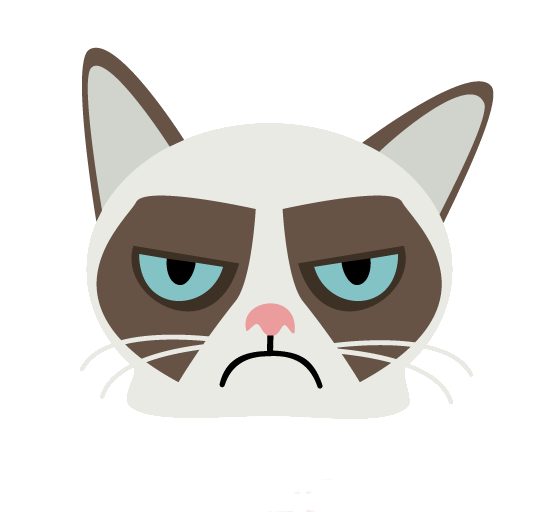

<div class="navbar-fixed">
    <nav>
        <div class="nav-wrapper navbar">
            
            <a href="#" class="brand-logo left keepics-logo">KEEPICS</a>
            <form class="searchbar">
                <div class="input-field ">
                    <input id="search" type="search" required>
                    <label class="label-icon" for="search"><i class="material-icons">search</i></label>
                    <i class="material-icons">close</i>
                </div>
            </form>
            <ul class="right hide-on-med-and-down ">
                <li ui-sref-active="active"><a ui-sref="user.home">Home</a></li>
                <li><a ng-click="logout()" ng-show="auth.isAuthenticated()" href='#'>Logout</a></li>
            </ul>
        </div>
    </nav>
</div>
